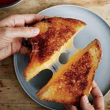
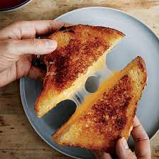
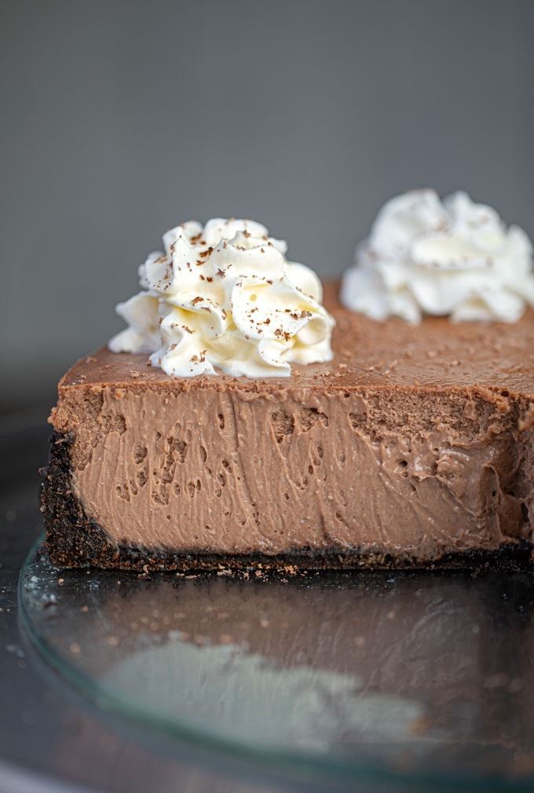

Cheesey Potatoes

Origin: American
Source: Own
Category: Comfort Food
One of my favorite foods on the planet, cheesey potatoes are an amazing casserole that is very easy and tastes like it's very hard to make, because it is so good! Over the years, I have blended many recipes to make the perfect cheesey potato casserole. If you want to try adjustments, there are many possible! You can substitute the condensed cream of celery soup with condensed cream of mushroom or condensed cream of chicken if you are a chicken or mushroom fan. Feel free to try adding in some onions or green onions too if you enjoy them! If you prefer a richer casserole, you can add up to 1 stick of butter instead of 2-4 tablespoons, and you can even double the salt (although in my opinion that is too salty). If you are on a diet, this casserole is so delicious it really doesn't need any added butter, and is still great with half the salt, so you can remove the butter from the ingredients and half the salt. You can use a larger portion of garlic salt rather than table salt, or even experiment with some celery salt! Try cornflakes instead of potato chips. Or cubed hashbrowns instead of shredded. The options are almost endless!
Recipe Ingredients:
- 1 30oz bag of frozen shredded hashbrown, thawed
- 1 pint sour cream
- 1 can condensed cream of celery soup
- 2 cups shredded sharp cheddar cheese
- several handfuls crushed potato chips
- 2-4 tablespoons butter (to taste)
- 1/2 teaspon salt (to taste)
- pepper (to taste)
Recipe Steps:
- Preheat oven to 350 degrees Fahrenheit.
- In a large mixing bowl, mix potatoes, sour cream, cream of celery soup, half of the cheese, half of the butter (melted), the salt, and the paper, until uniform.
- Take the rest of the butter, and use it to generously grease a 9x13 pan. Melt any remaining butter.
- Pour the mixture from the bowl into the pan.
- On top, sprinkle remaining cheese, and the crushed chips after the cheese. Both should have enough to have a thin mostly-covering on the top.
- Drizzle any remaining butter.
- Place in oven on middle shelf, and cook until the edges and top are starting to brown a bit, usually a little over 45 minutes.
- Take out of oven after done, and give it some time to cool down, and then cover or eat!

Best Grilled Cheese

Origin: American
Source: Own
Category: Main Dish
Of all the grilled cheeses, in my opinion, this is the best. With sharp delicious cheese, and a taste of sweetness, you can't go wrong with this dish. Easy to make, for a quick comforting dinner.
Recipe Ingredients:
- 2 slices bread (I prefer whole wheat bread, but some people prefer sourdough or Hawaien bread)
- A block of sharp cheddar and Gouda cheese
- Apple butter
- Several tablespoons butter
- Prepared tomato soup to eat it with if desired
Recipe Steps:
- Put .5-1 tablespoon butter in skillet, and turn burner on low.
- Take two pieces of bread, and lightly butter them.
- Place a thin layer of apple butter on one side of each slice of bread.
- Cut apple into thin slices of uniform thickness, and cover most of one of the breads with it (over the apple butter.)
- Cut the cheddar and Gouda into thin slices, and put it on the bread with the apples, to taste, with about 3/4 being the cheddar.
- Put the second piece of bread on the one with the apples, apple butter side in.
- Turn burner up to medium, and once butter is melted and close to bubbling, place sandwich on skillet.
- Turn so that the sandwhich cooks evenly on both sides, until both sides are golden brown.
- Remove the sandwhich from the burner (with a spatula) and place it on a plate. Turn off burner when done, and wait for sandwhiches to cool to be safe.
- Eat on it's own, or with some tomato soup!
 

Chocolate Cheesecake
Origin: American
Source: Chocolate Cheesecake
This decadent cheesecake is rich and creamy, and so chocolatey! My favorite desert, and not hard to make, it is a must try! Especially if you love chocolate and thick rich cheesecake!
Category: Desert
Recipe Ingredients:
- 24 Oreo Cookies , crushed to fine crumbs
- 6 tablespoons unsalted butter , melted
- 1 cup semisweet chocolate chips
- 24 ounces cream cheese , softened (very important)
- 1 cup sugar
- 3 tablespoons flour
- 3 large eggs
- 1/2 cup sour cream
- 2 teaspoons vanilla extract
Recipe Steps:
- Mix the Oreo cookies and butter in a medium bowl then press the crumb mixture into a 9" springform pan up the sides 1" high and refrigerate for 20 minutes.
- Melt chocolate chips in microwave in 30 second increments (total of 90 seconds), stirring each time in between until completely smooth.
- In your stand mixer add the cream cheese, sugar and flour until completely smooth (this is why we need softened cream cheese, if it is too cold you'll have small chunks of cream cheese here).
- Add in the eggs one at a time until each one is fully mixed in, then with the mixer going on low speed pour in the melted chocolate.
- Add in the sour cream and vanilla until smooth, then pour the mixture carefully into the chilled springform pan.
- Set the bottom of the cheesecake in foil (read water bath directions above) and place in water bath, then place in oven.
- Bake in a preheated oven at 350 degrees F (175 degrees C) for 55 - 60 minutes.
- Open the door to the oven about 4-5 inches and let cool for 2 hours in the partially opened oven before removing and refrigerating for 4-6 hours before serving.